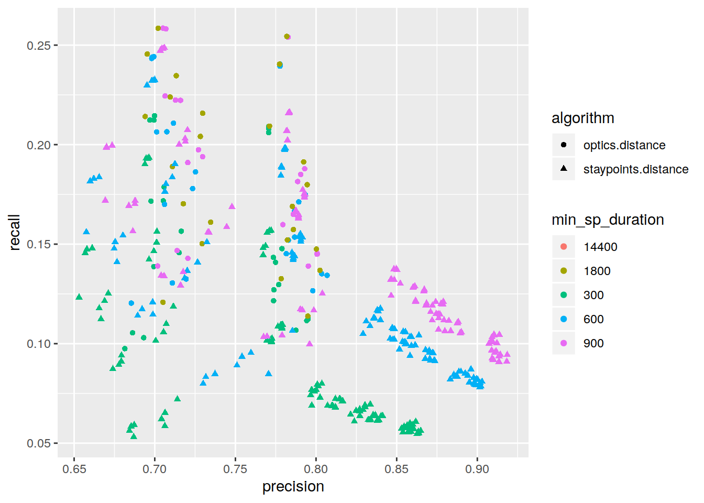
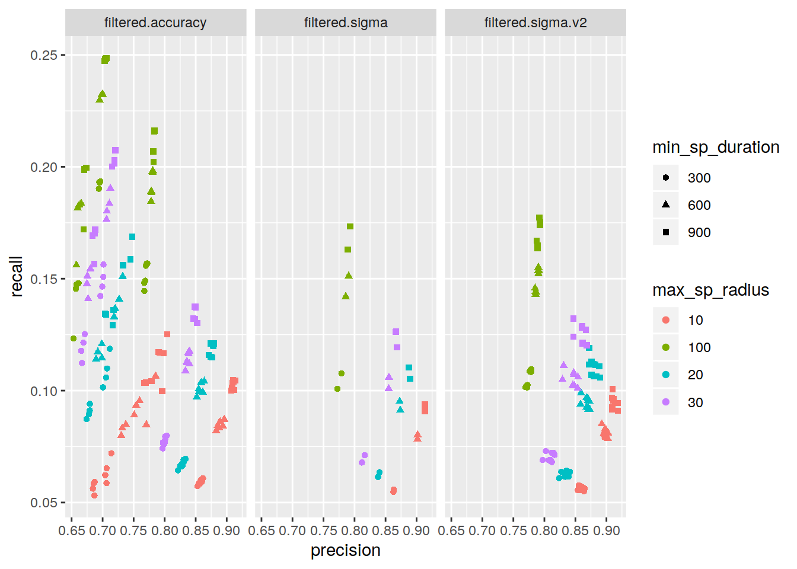
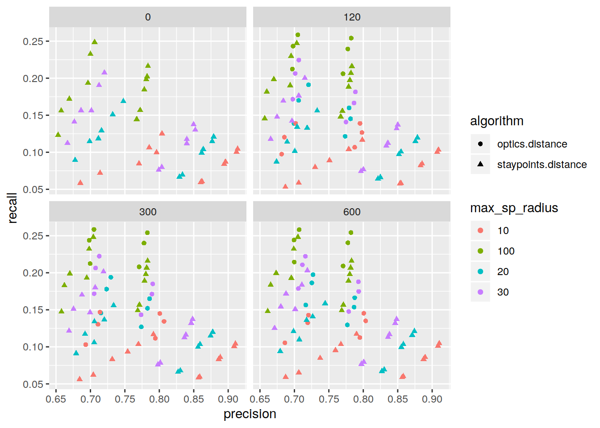

Exploration of algorithms and parameters
Dennis Wollersheim
2020-01-13
Last updated: 2020-01-22
Checks: 7 0
Knit directory: initialAnalysis/
This reproducible R Markdown analysis was created with workflowr (version 1.4.0.9001). The Checks tab describes the reproducibility checks that were applied when the results were created. The Past versions tab lists the development history.
Great! Since the R Markdown file has been committed to the Git repository, you know the exact version of the code that produced these results.
Great job! The global environment was empty. Objects defined in the global environment can affect the analysis in your R Markdown file in unknown ways. For reproduciblity it’s best to always run the code in an empty environment.
The command set.seed(20180727) was run prior to running the code in the R Markdown file. Setting a seed ensures that any results that rely on randomness, e.g. subsampling or permutations, are reproducible.
Great job! Recording the operating system, R version, and package versions is critical for reproducibility.
Nice! There were no cached chunks for this analysis, so you can be confident that you successfully produced the results during this run.
Great job! Using relative paths to the files within your workflowr project makes it easier to run your code on other machines.
Great! You are using Git for version control. Tracking code development and connecting the code version to the results is critical for reproducibility. The version displayed above was the version of the Git repository at the time these results were generated.
Note that you need to be careful to ensure that all relevant files for the analysis have been committed to Git prior to generating the results (you can use wflow_publish or wflow_git_commit). workflowr only checks the R Markdown file, but you know if there are other scripts or data files that it depends on. Below is the status of the Git repository when the results were generated:
Ignored files:
Ignored: .Rhistory
Ignored: .drake/
Ignored: .slurm_batchtools.tmpl.swp
Ignored: analysis/analyse_staypoint_estimates_cache/
Ignored: analysis/evaluate_staypoint_estimates_cache/
Ignored: analysis/mark_staypoint_cache/
Ignored: analysis/mark_staypoint_systematic_cache/
Ignored: cluster.json
Ignored: credentials.json
Ignored: data/
Ignored: data_fast
Ignored: explore/.make.R.swp
Ignored: lib/keys.R
Untracked files:
Untracked: explore/failure_analysis_florian_surveys.R
Untracked: explore/timezone_test.R
Untracked: lib/survey_functions.R
Unstaged changes:
Modified: analysis/evaluate_staypoint_estimates_post_drake.Rmd
Modified: explore/explore_results_final.R
Modified: explore/make.R
Modified: lib/evaluate_staypoint_estimates_helper.R
Modified: lib/load_results.R
Modified: lib/location_prep.R
Note that any generated files, e.g. HTML, png, CSS, etc., are not included in this status report because it is ok for generated content to have uncommitted changes.
These are the previous versions of the R Markdown and HTML files. If you’ve configured a remote Git repository (see ?wflow_git_remote), click on the hyperlinks in the table below to view them.
| File | Version | Author | Date | Message |
|---|---|---|---|---|
| Rmd | 1d32687 | Dennis Wollersheim | 2020-01-21 | wflow_publish(“analysis/evaluate_staypoint_estimates_optics.Rmd”) |
| html | 9ccf746 | Dennis Wollersheim | 2020-01-20 | Build site. |
| html | 682022b | Dennis Wollersheim | 2020-01-20 | Build site. |
| Rmd | d116d95 | Dennis Wollersheim | 2020-01-20 | wflow_publish(“analysis/evaluate_staypoint_estimates_optics.Rmd”) |
| Rmd | 829b531 | Dennis Wollersheim | 2020-01-13 | survey use of IDs |
| Rmd | 8891976 | Dennis Wollersheim | 2020-01-12 | stuff |
| html | 8891976 | Dennis Wollersheim | 2020-01-12 | stuff |
source('lib/base_initialise.R')Loading required package: spLoading required package: DBI── Attaching packages ─────────────────────────────────────── tidyverse 1.3.0 ──✔ ggplot2 3.2.1 ✔ purrr 0.3.3
✔ tibble 2.1.3 ✔ dplyr 0.8.3
✔ tidyr 1.0.0 ✔ stringr 1.4.0
✔ readr 1.3.1 ✔ forcats 0.4.0── Conflicts ────────────────────────────────────────── tidyverse_conflicts() ──
✖ tidyr::extract() masks raster::extract()
✖ dplyr::filter() masks stats::filter()
✖ dplyr::lag() masks stats::lag()
✖ dplyr::select() masks raster::select()
Attaching package: 'lubridate'The following object is masked from 'package:base':
dateWarning: package 'drake' was built under R version 3.6.2
Attaching package: 'drake'The following objects are masked from 'package:tidyr':
expand, gatherData (c) OpenStreetMap contributors, ODbL 1.0. http://www.openstreetmap.org/copyright
Attaching package: 'tsibble'The following objects are masked from 'package:lubridate':
interval, new_intervalThe following object is masked from 'package:dplyr':
idThe following object is masked from 'package:raster':
stretch
Attaching package: 'magrittr'The following object is masked from 'package:purrr':
set_namesThe following object is masked from 'package:tidyr':
extractThe following object is masked from 'package:raster':
extractWarning: package 'knitr' was built under R version 3.6.2
Attaching package: 'wrapr'The following object is masked from 'package:dplyr':
coalesceThe following object is masked from 'package:tibble':
viewLoading required package: BiocGenericsLoading required package: parallel
Attaching package: 'BiocGenerics'The following objects are masked from 'package:parallel':
clusterApply, clusterApplyLB, clusterCall, clusterEvalQ,
clusterExport, clusterMap, parApply, parCapply, parLapply,
parLapplyLB, parRapply, parSapply, parSapplyLBThe following objects are masked from 'package:lubridate':
intersect, setdiff, unionThe following objects are masked from 'package:dplyr':
combine, intersect, setdiff, unionThe following objects are masked from 'package:raster':
as.data.frame, intersect, match, union, unique, which.max,
which.minThe following objects are masked from 'package:stats':
IQR, mad, sd, var, xtabsThe following objects are masked from 'package:base':
anyDuplicated, append, as.data.frame, basename, cbind, colnames,
dirname, do.call, duplicated, eval, evalq, Filter, Find, get, grep,
grepl, intersect, is.unsorted, lapply, Map, mapply, match, mget,
order, paste, pmax, pmax.int, pmin, pmin.int, Position, rank,
rbind, Reduce, rownames, sapply, setdiff, sort, table, tapply,
union, unique, unsplit, which, which.max, which.minLoading required package: S4VectorsLoading required package: stats4
Attaching package: 'S4Vectors'The following object is masked from 'package:drake':
expandThe following objects are masked from 'package:lubridate':
second, second<-The following objects are masked from 'package:dplyr':
first, renameThe following object is masked from 'package:tidyr':
expandThe following objects are masked from 'package:raster':
metadata, metadata<-, values, values<-The following object is masked from 'package:base':
expand.grid
Attaching package: 'IRanges'The following object is masked from 'package:tsibble':
tileThe following object is masked from 'package:lubridate':
%within%The following objects are masked from 'package:dplyr':
collapse, desc, sliceThe following object is masked from 'package:purrr':
reduceThe following objects are masked from 'package:raster':
distance, shift, trimThe following object is masked from 'package:sp':
%over%Warning: package 'zoo' was built under R version 3.6.2
Attaching package: 'zoo'The following object is masked from 'package:tsibble':
indexThe following objects are masked from 'package:base':
as.Date, as.Date.numeric
Attaching package: 'glue'The following objects are masked from 'package:IRanges':
collapse, trimThe following object is masked from 'package:dplyr':
collapseThe following object is masked from 'package:raster':
trim
Attaching package: 'tibbletime'The following object is masked from 'package:stats':
filtersource('lib/functions.R')
Attaching package: 'janitor'The following object is masked from 'package:raster':
crosstabThe following objects are masked from 'package:stats':
chisq.test, fisher.testsource('lib/gps_functions.R')
source('lib/location_prep.R')
source('lib/load_results.R')Warning: Expected 8 pieces. Missing pieces filled with `NA` in 624 rows [1, 2,
3, 4, 5, 6, 7, 8, 9, 10, 11, 12, 13, 14, 15, 16, 17, 18, 19, 20, ...].source('lib/evaluate_staypoint_estimates_helper.R')
source('lib/survey_functions.R')
source("explore/failure_analysis_florian_surveys.R")
min_accuracy = 10
display_one_staypoint_set = function( df, .userid, .night ) {
readd(df, character_only=TRUE ) %>%
filter( userid==.userid & night==.night) %>%
mutate(
m_lat = ll2m( latitude, min(latitude), m_per_latitude),
m_lon = ll2m( longitude, min(longitude), m_per_longitude)) %>%
ggplot( aes( m_lat, m_lon, color=as.factor(n_staypoint))) +
ggtitle(paste(str_subset(.userid, '.*_'), .night, df)) +
geom_point()
}demonstrate the difference between the different accuracy levels (100/10), and the impact on the different algorithms
for a single user/night
display_one_staypoint_set (
'optics_distance_14400_300_100_interpolated_locations_120_filtered_accuracy_10',
'60df2368-deb6-4f46-aebc-4ad7dd80f434',
'2014-10-31')
| Version | Author | Date |
|---|---|---|
| 8891976 | Dennis Wollersheim | 2020-01-12 |
display_one_staypoint_set(
'staypoints_distance_14400_300_100_interpolated_locations_120_filtered_accuracy_10',
'60df2368-deb6-4f46-aebc-4ad7dd80f434',
'2014-10-31')
| Version | Author | Date |
|---|---|---|
| 8891976 | Dennis Wollersheim | 2020-01-12 |
display_one_staypoint_set(
'optics_distance_14400_300_100_interpolated_locations_120_filtered_accuracy_100',
'60df2368-deb6-4f46-aebc-4ad7dd80f434',
'2014-10-31')
| Version | Author | Date |
|---|---|---|
| 8891976 | Dennis Wollersheim | 2020-01-12 |
display_one_staypoint_set(
'staypoints_distance_14400_300_100_interpolated_locations_120_filtered_accuracy_100',
'60df2368-deb6-4f46-aebc-4ad7dd80f434', '2014-10-31')
| Version | Author | Date |
|---|---|---|
| 8891976 | Dennis Wollersheim | 2020-01-12 |
match optics and staypoint, comparing found surveys behaviour
Note, when using a loose accuracy level, sp algorithm is slightly better at finding surveys
using dataset : optics_distance_14400_300_100_interpolated_locations_120_filtered_accuracy_100
readd( df_matching_survey_per_staypoint_df_matching_survey_optics_distance_14400_300_100_interpolated_locations_120_filtered_accuracy_100) %>%
mutate(algo='optics') %>%
bind_rows( readd(df_matching_survey_per_staypoint_df_matching_survey_staypoints_distance_14400_300_100_interpolated_locations_120_filtered_accuracy_100) %>%
mutate(algo='sp')) %>%
count( userid, night, algo) %>%
spread(algo, n, fill=0) %>%
arrange( optics - sp) %>%
head(5 )# A tibble: 5 x 4
userid night optics sp
<chr> <date> <dbl> <dbl>
1 7907f345-ef4b-412a-9340-b56ebb589cca 2014-09-19 2 7
2 0387ce90-5e83-4ee8-a3ee-bc2e09877249 2014-09-20 1 4
3 24c0f1c5-a8f0-4f7e-a8c9-3bb9b545ddae 2014-09-27 3 6
4 c0d272db-1759-4fd4-94cf-e69af5581393 2014-10-18 3 6
5 374554f1-a18c-4636-8be1-d290dc16f55e 2014-10-24 2 4display_one_staypoint_set(
'optics_distance_14400_300_100_interpolated_locations_120_filtered_accuracy_100',
'7907f345-ef4b-412a-9340-b56ebb589cca','2014-09-19')
| Version | Author | Date |
|---|---|---|
| 8891976 | Dennis Wollersheim | 2020-01-12 |
display_one_staypoint_set(
'staypoints_distance_14400_300_100_interpolated_locations_120_filtered_accuracy_100',
'7907f345-ef4b-412a-9340-b56ebb589cca','2014-09-19')
| Version | Author | Date |
|---|---|---|
| 8891976 | Dennis Wollersheim | 2020-01-12 |
display_one_staypoint_set(
'optics_distance_14400_300_100_interpolated_locations_120_filtered_accuracy_10',
'7907f345-ef4b-412a-9340-b56ebb589cca','2014-09-19')
| Version | Author | Date |
|---|---|---|
| 682022b | Dennis Wollersheim | 2020-01-20 |
display_one_staypoint_set(
'staypoints_distance_14400_300_100_interpolated_locations_120_filtered_accuracy_10',
'7907f345-ef4b-412a-9340-b56ebb589cca','2014-09-19')
| Version | Author | Date |
|---|---|---|
| 682022b | Dennis Wollersheim | 2020-01-20 |
background
what do the surveys look like
Florian was able to identify survey points at the following frequencies. sp stands for if this survey was likely to be a staypoint (the ‘gold’ standard to match) The best staypoint discovery algorithm will maximise precision and recall of sp type locations
n_ptype_short_total() %>%
inner_join( ptype_short()) %>%
group_by( ptype_short, category ) %>%
summarise( total_for_category=sum(n_ptype_loc)) %>%
kableExtra::kable()Joining, by = "ptype_id_short"| ptype_short | category | total_for_category |
|---|---|---|
| Bar | sp | 345 |
| Club | sp | 86 |
| Other commercial venue | sp | 74 |
| Private | sp | 1304 |
| Restaurant | sp | 130 |
| Streets / Outdoor / Park | sp | 331 |
| Travelling | non-sp | 116 |
| UNKNOWN | non-sp | 2287 |
In summary, there are this breakdown of target staypoints
n_ptype_short_total() %>%
inner_join( ptype_short()) %>%
group_by( category ) %>%
summarise( total_for_category=sum(n_ptype_loc)) %>%
kableExtra::kable()Joining, by = "ptype_id_short"| category | total_for_category |
|---|---|
| non-sp | 2403 |
| sp | 2270 |
which algorithim and parameters maximise discovery of appropriate surveys
Here are the top 20 algorithms, for raw survey discovery. Optics is comparable, but both have very loose parameters
df_results %>%
arrange( desc( sp )) %>%
mutate( pct_coverage = mkpct( sp / 1939 )) %>%
dplyr::select( base_file, sp,pct_coverage ) %>%
head(20) %>%
kableExtra::kable()| base_file | sp | pct_coverage |
|---|---|---|
| staypoints_distance_14400_300_100_interpolated_locations_120_filtered_accuracy_100 | 1106 | 57.04 |
| staypoints_distance_14400_300_100_filtered_accuracy_100 | 1105 | 56.99 |
| staypoints_distance_14400_300_100_interpolated_locations_300_filtered_accuracy_100 | 1105 | 56.99 |
| staypoints_distance_14400_300_100_interpolated_locations_600_filtered_accuracy_100 | 1105 | 56.99 |
| staypoints_distance_14400_300_100_filtered_sigma.v2_0.5 | 1097 | 56.58 |
| optics_distance_14400_300_100_interpolated_locations_120_filtered_accuracy_100 | 1095 | 56.47 |
| optics_distance_1800_300_100_interpolated_locations_120_filtered_accuracy_100 | 1095 | 56.47 |
| optics_distance_14400_300_100_interpolated_locations_300_filtered_accuracy_100 | 1089 | 56.16 |
| optics_distance_14400_300_100_interpolated_locations_600_filtered_accuracy_100 | 1089 | 56.16 |
| optics_distance_1800_300_100_interpolated_locations_300_filtered_accuracy_100 | 1089 | 56.16 |
| optics_distance_1800_300_100_interpolated_locations_600_filtered_accuracy_100 | 1089 | 56.16 |
| staypoints_distance_14400_300_100_filtered_sigma.v2_3 | 1088 | 56.11 |
| staypoints_distance_14400_300_100_filtered_sigma.v2_1 | 1087 | 56.06 |
| staypoints_distance_14400_300_100_filtered_sigma.v2_2 | 1087 | 56.06 |
| optics_distance_other_14400_300_100_filtered_accuracy_100 | 1085 | 55.96 |
| optics_distance_other_1800_300_100_filtered_accuracy_100 | 1085 | 55.96 |
| staypoints_distance_14400_600_100_interpolated_locations_120_filtered_accuracy_100 | 1085 | 55.96 |
| staypoints_distance_14400_300_100_filtered_sigma.v2_100 | 1084 | 55.91 |
| staypoints_distance_14400_600_100_filtered_accuracy_100 | 1084 | 55.91 |
| staypoints_distance_14400_600_100_interpolated_locations_300_filtered_accuracy_100 | 1084 | 55.91 |
df_results %>%
arrange( desc( sp )) %>%
mutate( pct_coverage = mkpct( sp / 1939 )) %>%
dplyr::select( base_file, sp,pct_coverage, algorithm ) %>%
head(20) %>%
ggplot( aes( base_file, sp, fill=algorithm ) ) +
geom_col() +
coord_flip()# Is there a difference between optics and distance staypoint discovery sets? look at the characteristics of the best of each; not much difference, at the wide parameter level
df_results %>%
arrange( desc( sp )) %>%
filter( str_detect( base_file, '^stay')) %>%
head(1) %>%
pluck('base_file') %>%
paste0('df_matching_survey_', .) %>%
readd( character_only=TRUE ) %>%
{ . } -> df_sp
df_results %>%
arrange( desc( sp )) %>%
filter( str_detect( base_file, '^optics')) %>%
head(1) %>%
pluck('base_file') %>%
paste0('df_matching_survey_', .) %>%
readd( character_only=TRUE ) %>%
{ . } -> df_op
#df_sp %>% count( userid, night )
#df_op %>% count( userid, night )Maybe 1% difference in night overlap
df_op %>%
anti_join( df_sp, by=c('userid','night'))# A tibble: 9 x 11
userid night timestamp_survey timestamp_end.x which id n_staypoint
<chr> <date> <dbl> <dbl> <chr> <dbl> <int>
1 184a1… 2014-10-10 1412965301 1412965301 dq 273 1
2 184a1… 2014-10-10 1412966165 1412966165 dq 274 1
3 60df2… 2014-10-11 1413063025 1413063025 dq 1525 1
4 64105… 2014-10-03 1412366308 1412366308 dq 1599 1
5 9afc6… 2014-10-31 1414791859 1414791859 dq 2669 2
6 ad36d… 2014-10-04 1412449334 1412449334 dq 2933 1
7 b7858… 2014-10-25 1414268128 1414268128 dq 3164 3
8 bb628… 2014-09-26 1411754650 1411754650 dq 3239 2
9 c53a9… 2014-10-18 1413662840 1413662840 dq 3418 1
# … with 4 more variables: timestamp_start_location <dbl>,
# timestamp_end_location <dbl>, longitude <dbl>, latitude <dbl>df_sp %>%
anti_join( df_op, by=c('userid','night'))# A tibble: 16 x 11
userid night timestamp_survey timestamp_end.x which id n_staypoint
<chr> <date> <dbl> <dbl> <chr> <dbl> <dbl>
1 184a1… 2014-10-04 1412449642 1412449642 dq 270 1
2 184a1… 2014-10-04 1412453927 1412453927 dq 271 1
3 26d4c… 2014-09-27 1411853954 1411853954 dq 495 3
4 26d4c… 2014-09-27 1411856095 1411856095 dq 496 3
5 5feda… 2014-11-08 1415477550 1415477550 dq 1503 2
6 7907f… 2014-10-24 1414192420 1414192420 dq 1986 8
7 7907f… 2014-10-24 1414192684 1414192684 dq 1987 8
8 98c7d… 2014-09-27 1411845243 1411845243 dq 2601 2
9 98c7d… 2014-09-27 1411845421 1411845421 dq 2602 2
10 98c7d… 2014-10-04 1412455850 1412455850 dq 2605 5
11 98c7d… 2014-10-04 1412455850 1412455850 dq 2605 6
12 a588f… 2014-10-31 1414797973 1414797973 dq 2833 5
13 bfae1… 2014-09-27 1411842295 1411842295 dq 3282 1
14 bfae1… 2014-09-27 1411843001 1411843001 dq 3283 1
15 e3aec… 2014-10-04 1412453337 1412453337 dq 3958 3
16 feb82… 2014-10-10 1412968681 1412968681 dq 4668 1
# … with 4 more variables: timestamp_start_location <dbl>,
# timestamp_end_location <dbl>, longitude <dbl>, latitude <dbl>difference between optics and distance staypoint discovery sets at finer parameter levels (staypoint radius=20m)
At this level, optics gets 13% fewer sp, same staypoint duration, many fewer staypoints
df_results %>%
arrange( desc( sp )) %>%
filter( max_sp_radius==20) %>%
filter( str_detect( base_file, '^stay')) %>%
head(1)# A tibble: 1 x 18
source algorithm max_jump_time min_sp_duration max_sp_radius filter_type
<chr> <chr> <chr> <chr> <chr> <chr>
1 stayp… staypoin… 14400 300 20 filtered.a…
# … with 12 more variables: filter_parm1 <chr>, filter_parm2 <chr>,
# non_sp <int>, sp <int>, surveys_total <int>, sp_total <dbl>,
# total_sp_duration <dbl>, base_file <chr>, interpol_parm <chr>,
# accuracy_filter <chr>, precision <dbl>, recall <dbl>df_results %>%
arrange( desc( sp )) %>%
filter( max_sp_radius==20) %>%
filter( str_detect( base_file, '^optics')) %>%
head(1)# A tibble: 1 x 18
source algorithm max_jump_time min_sp_duration max_sp_radius filter_type
<chr> <chr> <chr> <chr> <chr> <chr>
1 optic… optics.d… 14400 300 20 filtered.a…
# … with 12 more variables: filter_parm1 <chr>, filter_parm2 <chr>,
# non_sp <int>, sp <int>, surveys_total <int>, sp_total <dbl>,
# total_sp_duration <dbl>, base_file <chr>, interpol_parm <chr>,
# accuracy_filter <chr>, precision <dbl>, recall <dbl>20M radius staypoint results
which what do results look like when looking at algorithim and parameters maximise discovery of appropriate surveys
Here are the top 20 algorithms, for raw survey discovery. Optics is comparable, but both have very loose parameters
df_results %>%
filter( max_sp_radius==20) %>%
arrange( desc( sp )) %>%
mutate( pct_coverage = mkpct( sp / 1939 )) %>%
dplyr::select( base_file, sp,pct_coverage ) %>%
head(20) %>%
kableExtra::kable()| base_file | sp | pct_coverage |
|---|---|---|
| staypoints_distance_14400_300_20_interpolated_locations_120_filtered_accuracy_100 | 984 | 50.75 |
| staypoints_distance_14400_300_20_filtered_sigma.v2_0.5 | 981 | 50.59 |
| staypoints_distance_14400_300_20_interpolated_locations_300_filtered_accuracy_100 | 980 | 50.54 |
| staypoints_distance_14400_300_20_interpolated_locations_600_filtered_accuracy_100 | 979 | 50.49 |
| staypoints_distance_1800_300_20_interpolated_locations_120_filtered_accuracy_100 | 952 | 49.10 |
| staypoints_distance_1800_300_20_interpolated_locations_300_filtered_accuracy_100 | 948 | 48.89 |
| staypoints_distance_14400_300_20_filtered_accuracy_100 | 947 | 48.84 |
| staypoints_distance_1800_300_20_interpolated_locations_600_filtered_accuracy_100 | 947 | 48.84 |
| staypoints_distance_14400_300_20_filtered_sigma.v2_1 | 934 | 48.17 |
| staypoints_distance_1800_300_20_filtered_sigma.v2_0.5 | 930 | 47.96 |
| staypoints_distance_14400_300_20_filtered_sigma.v2_2 | 928 | 47.86 |
| staypoints_distance_14400_300_20_filtered_sigma.v2_3 | 921 | 47.50 |
| staypoints_distance_14400_300_20_filtered_sigma.v2_100 | 917 | 47.29 |
| staypoints_distance_14400_300_20_filtered_sigma_0.5 | 910 | 46.93 |
| staypoints_distance_14400_300_20_filtered_sigma_1 | 910 | 46.93 |
| staypoints_distance_14400_300_20_filtered_sigma_100 | 910 | 46.93 |
| staypoints_distance_14400_300_20_filtered_sigma_2 | 910 | 46.93 |
| staypoints_distance_14400_300_20_filtered_sigma_3 | 910 | 46.93 |
| staypoints_distance_1800_300_20_filtered_accuracy_100 | 903 | 46.57 |
| staypoints_distance_1800_300_20_filtered_sigma.v2_1 | 894 | 46.11 |
df_results %>%
filter( max_sp_radius==20) %>%
arrange( desc( sp )) %>%
mutate( pct_coverage = mkpct( sp / 1939 )) %>%
dplyr::select( base_file, sp,pct_coverage, algorithm ) %>%
head(20) %>%
ggplot( aes( base_file, sp, fill=algorithm ) ) +
geom_col() +
coord_flip() # model precision / recall we are trying to identify correct survey marked staypoints
# model precision / recall we are trying to identify correct survey marked staypoints
- True positive - surveys identified as staypoints
- false positive - surveys missed by staypoint discovery
- true negative - points neither marked by surveys nor identified as staypoints
- false negative points identified as staypoints, but not marked by surveys (sp)
our gold standard is actuallly bronze
False negative criticism: an algorithmm identified staypoint could still be a valid staypoint
it might be an unsurveyed staypoint, maybe they didn’t have a drink, or record it (e.g. visiting on the streetcorner)
we will get relativly good (but low) values for precision and recall if we assume that the surveypoints do identify staypoints
recall is the number of true positives divided by the number of true positives plus the number of false negatives.
Precision is defined as the number of true positives divided by the number of true positives plus the number of false positives.
what does precision and recall look like
duration in seconds, distance from centriod in meters
Optics is better. larger radius is better
df_results %>%
ggplot( aes( precision, recall, shape=algorithm, color= max_sp_radius ) ) +
geom_point()
| Version | Author | Date |
|---|---|---|
| 682022b | Dennis Wollersheim | 2020-01-20 |
df_results %>%
ggplot( aes( precision, recall, shape=algorithm, color= min_sp_duration ) ) +
geom_point()
| Version | Author | Date |
|---|---|---|
| 682022b | Dennis Wollersheim | 2020-01-20 |
effect of different filtering algorithms
Excluding optics algorithm, because it only uses accuracy filter
Accuracy is the best, throw away the others
df_results %>%
filter( algorithm != 'optics.distance') %>%
ggplot( aes( precision, recall, shape=min_sp_duration, color= max_sp_radius ) ) +
geom_point() + facet_wrap( ~filter_type )
| Version | Author | Date |
|---|---|---|
| 682022b | Dennis Wollersheim | 2020-01-20 |
effect of interpolation
Interpolation appears to have little effect
df_results %>%
filter( filter_type == 'filtered.accuracy') %>%
ggplot( aes( precision, recall, shape=algorithm, color= max_sp_radius ) ) +
geom_point() + facet_wrap( ~interpol_parm )
| Version | Author | Date |
|---|---|---|
| 682022b | Dennis Wollersheim | 2020-01-20 |
Focus on single algorithm
Due to business rules, 20M radius is preferable, and due to the poor quality of the gold standard, low precision is less of a worry than low recall
So, we focus on the best recall, in the 20M radius.
Optics distance algorithm, harshest accuracy filter on GPS points, 15 minute staypoint windows
df_results %>%
filter( filter_type == 'filtered.accuracy') %>%
filter( recall > .18 ) %>%
filter( max_sp_radius == '20' ) %>%
ggplot( aes( precision, recall) ) +
geom_jitter(position = position_jitter(seed = 1)) +
geom_text(aes( label=source ), position = position_jitter(seed = 1), check_overlap=TRUE)
| Version | Author | Date |
|---|---|---|
| 682022b | Dennis Wollersheim | 2020-01-20 |
Focus on single algorithm
find analysis of locations that results with best recall with above parameters
df_best contains all the gps locations (possibly extrapolated) of all the discovered staypoints, for optics_distance_14400_900_20_interpolated_locations_600_filtered_accuracy_10 dataset
df_results %>%
filter( filter_type == 'filtered.accuracy') %>%
filter( max_sp_radius == '20' ) %>%
arrange( desc( recall )) %>%
head(1) %>%
pluck( 'base_file' ) %>%
{ . } -> df_best_base_filename
df_best_base_filename %>%
readd(character_only=TRUE) %>%
{ . } -> df_bestfailure analysis
What could go wrong with staypoints:
- did not capture any gps at all for that night
- poor qualtity GPS points
- insufficient duration gps points
- battery ran out earlier in the evening
- survey points are all earlier than GPS points
survey data analysis from pov of GPS data
readd( df_all_ts ) %>%
group_by( id, userid, night) %>%
dplyr::summarise( timestamp = min(timestamp)) %>%
{ . } -> df_surveys
df_surveys_to_match = get_surveys_to_match()
df_nights_with_gps = get_nights_with_gps()nights with surveys, but missing GPS entirely
df_surveys_to_match %>%
anti_join( df_nights_with_gps) %>%
count()Joining, by = c("userid", "night")# A tibble: 1 x 1
n
<int>
1 786df_surveys_to_match %>%
inner_join( df_nights_with_gps %>% dplyr::select(userid, night), by=c('userid','night')) %>%
{ . } -> df_surveys_to_match_2too small duration GPS
which survey nights had less than 20 minutes of GPS in a night
df_nights_with_gps %>%
filter( duration < 1200 ) %>%
inner_join( df_surveys_to_match_2, by=c('userid','night') ) %>%
count()# A tibble: 62 x 2
# Groups: userid [62]
userid n
<chr> <int>
1 05f35693-7fec-4372-af78-7bd904c187e0 1
2 0606e872-4a83-4e04-b90c-9b7c06e15a7b 2
3 0ea8dc43-bd54-425d-ba09-7ceaf0dd81ee 1
4 184a19da-2ba4-4be0-bf31-7c03216a06b4 6
5 1dd4c355-b584-4cff-9f7a-71b361795521 1
6 24c0f1c5-a8f0-4f7e-a8c9-3bb9b545ddae 3
7 29a5418a-4e67-43d0-bf5c-11d37aaf19fc 2
8 2be6c6d4-a381-4d67-af8d-745077eb21fa 3
9 2d06d8a5-febc-4c02-850b-e6d3e35cebfe 1
10 33dc1703-077d-4028-b6d8-55bbfb5b405c 2
# … with 52 more rowsdf_surveys_to_match_2 %>%
anti_join( df_nights_with_gps %>% filter( duration < 1200 ) ) %>%
{ . } -> df_surveys_to_match_3Joining, by = c("userid", "night")battery failure
which nights only had surveys AFTER the last GPS point (battery)
df_surveys_to_match_3 %>%
group_by( userid, night ) %>%
dplyr::summarise( first_survey_timestamp = min( timestamp), last_survey_timestamp = max(timestamp)) %>%
ungroup() %>%
inner_join( df_nights_with_gps ) %>%
filter( last_gps_timestamp < first_survey_timestamp ) %>%
dplyr::select( userid, night ) %>%
inner_join(df_surveys_to_match_3 ) %>%
count()Joining, by = c("userid", "night")Joining, by = c("userid", "night")# A tibble: 1 x 1
n
<int>
1 81df_surveys_to_match_3 %>%
group_by( userid, night ) %>%
dplyr::summarise( first_survey_timestamp = min( timestamp), last_survey_timestamp = max(timestamp)) %>%
ungroup() %>%
inner_join( df_nights_with_gps ) %>%
filter( last_gps_timestamp < first_survey_timestamp ) %>%
dplyr::select( userid, night ) %>%
{ . } -> df_lost_battery_nightsJoining, by = c("userid", "night")df_surveys_to_match_3 %>%
anti_join( df_lost_battery_nights) %>%
{ . } -> df_surveys_to_match_4Joining, by = c("userid", "night")surveyes BEFORE GPS
note, we have many more nights where the first survey happens PRIOR to to the first GPS point
fully 1/2 of the surveys are prior to the first gps point
df_surveys_to_match_4 %>%
group_by( userid, night ) %>%
dplyr::summarise( first_survey_timestamp = min( timestamp), last_survey_timestamp = max(timestamp)) %>%
ungroup() %>%
inner_join( df_nights_with_gps ) %>%
filter( first_gps_timestamp > last_survey_timestamp ) %>%
dplyr::select( userid, night ) %>%
inner_join(df_surveys_to_match_4 ) %>%
count()Joining, by = c("userid", "night")Joining, by = c("userid", "night")# A tibble: 1 x 1
n
<int>
1 158df_surveys_to_match_4 %>%
group_by( userid, night ) %>%
dplyr::summarise( first_survey_timestamp = min( timestamp), last_survey_timestamp = max(timestamp)) %>%
ungroup() %>%
inner_join( df_nights_with_gps ) %>%
filter( first_gps_timestamp > last_survey_timestamp ) %>%
dplyr::select( userid, night ) %>%
{ . } -> df_surveys_prior_to_gpsJoining, by = c("userid", "night")df_surveys_to_match_4 %>%
anti_join( df_surveys_prior_to_gps) %>%
{ . } -> df_surveys_to_match_5Joining, by = c("userid", "night")Notes from meeting 2020-01-20
predictable surveys deserts - no surveys within maximise correspondence between staypoints and predictable surveys throwaway questionnaire before and after throwaway questionnaire within the desert
must have 3 points roc curve, maximise area under the curve need to minimise staypoint area
correctly predicted predictable stationary picture / # possibly predictable sp / #staypoints
find Deserts, eliminate staypoints in the deserts
335 desert eliiminated surveys, using a 10 minute window, and 5 minute leeway after last gps point
desert_length=10
desert_endpoint_offset = 5*60
readd(df_location) %>%
{ . } -> df_location
df_location %>%
filter( accuracy < min_accuracy ) %>%
group_by(userid, night) %>%
dplyr::arrange(timestamp, .by_group=TRUE) %>%
mutate( timestamp_start = lag(timestamp) + desert_endpoint_offset,
timestamp_end = timestamp - desert_endpoint_offset,
diff = (timestamp_end - timestamp_start)/60 ) %>%
filter(!is.na(timestamp_start)) %>%
filter( diff > desert_length ) %>%
dplyr::select(userid, night, starts_with('timestamp_'), diff) %>%
nest( deserts=c(starts_with('timestamp_'), diff)) %>%
ungroup() %>%
{ . } -> df_location_deserts
#
# get_df_surveys_cleaned () %>%
# { . } -> df_surveys_to_match_5
df_surveys_to_match_5 %>%
group_by(userid, night) %>%
mutate( timestamp_start = timestamp, timestamp_end = timestamp) %>%
dplyr::select(userid, night, starts_with('timestamp_'), id) %>%
nest( surveys=c(starts_with('timestamp_'), id)) %>%
ungroup() %>%
{ . } -> df_surveys_to_match_nested
# keep track of ALL staypoints found so we don't lose any staypoints
# when we join them to the surveys in the next step
maximum_seconds_distant = 0
# which staypoints match survey timestamps
df_location_deserts %>%
inner_join( df_surveys_to_match_nested, by=c('userid', 'night')) %>%
group_by( userid, night ) %>%
do( joined = interval_inner_join( .$surveys[[1]], .$deserts[[1]], by=c('timestamp_start','timestamp_end'),
maxgap=maximum_seconds_distant )) %>%
unnest( joined ) %>%
ungroup() %>%
{ . } -> df_surveys_in_desert
df_surveys_in_desert %>% count()# A tibble: 1 x 1
n
<int>
1 334# alternative way to count
df_surveys_to_match_nested%>%
unnest(surveys) %>%
full_join( df_location_deserts %>% unnest(deserts), by=c('userid', 'night')) %>%
filter(
timestamp_start.x >= timestamp_start.y &
timestamp_end.x <= timestamp_end.y ) %>%
count()# A tibble: 1 x 1
n
<int>
1 334df_surveys_to_match_5 %>%
anti_join( df_surveys_in_desert, by='id') %>%
{ . } -> df_surveys_to_match_6get rid of surveys that are before or after the last gps points
df_surveys_to_match_6 %>%
inner_join( df_nights_with_gps, by=c('userid', 'night')) %>%
filter( timestamp < first_gps_timestamp - desert_endpoint_offset | timestamp > last_gps_timestamp + desert_endpoint_offset ) %>%
count()# A tibble: 1 x 1
n
<int>
1 200df_surveys_to_match_6 %>%
inner_join( df_nights_with_gps, by=c('userid', 'night')) %>%
filter( timestamp < first_gps_timestamp - desert_endpoint_offset | timestamp > last_gps_timestamp + desert_endpoint_offset ) %>%
{ . } -> df_surveys_pre_or_post_gps
df_surveys_to_match_6 %>%
anti_join( df_surveys_pre_or_post_gps, by='id' ) %>%
{ . } -> df_surveys_to_match_7
df_surveys_to_match_final = df_surveys_to_match_7
get_predictable_surveys()# A tibble: 531 x 13
id ptype_id_long ptype_long ptype_id_short ptype_short category userid
<dbl> <dbl> <chr> <dbl> <chr> <chr> <chr>
1 5 1 Bar 1 Bar sp 02f95…
2 7 6 Streets /… 6 Streets / … sp 0387c…
3 8 6 Streets /… 6 Streets / … sp 0387c…
4 10 1 Bar 1 Bar sp 0387c…
5 168 4 Private 4 Private sp 0ea8d…
6 169 4 Private 4 Private sp 0ea8d…
7 170 4 Private 4 Private sp 0ea8d…
8 171 4 Private 4 Private sp 0ea8d…
9 172 4 Private 4 Private sp 0ea8d…
10 174 7 Indoor re… 14 Other comm… sp 0ea8d…
# … with 521 more rows, and 6 more variables: night <date>, timestamp <dbl>,
# n_gps_points <int>, last_gps_timestamp <int>, first_gps_timestamp <int>,
# duration <int>failure analysis - wtf is happening with these lost surveys
given the best location set, what surveys does it miss?
best location set gets about 25% of surveys
df_surveys_to_match_final %>%
anti_join( readd(df_matching_survey_categories_df_matching_survey_optics_distance_14400_900_20_interpolated_locations_600_filtered_accuracy_10),
by='id') %>%
{ . } -> df_surveys_missed
df_surveys_to_match_final %>%
inner_join( readd(df_matching_survey_categories_df_matching_survey_optics_distance_14400_900_20_interpolated_locations_600_filtered_accuracy_10),
by='id') %>%
{ . } -> df_surveys_gotten
df_surveys_missed %>% count()# A tibble: 1 x 1
n
<int>
1 159df_surveys_gotten %>% count()# A tibble: 1 x 1
n
<int>
1 365#readd(df_matching_survey_categories_summary_all) %>%
# filter( str_detect(source, paste0( df_best_base_filename, '$'))) %>%
# distinct(source) %>%
# pluck('source')Current failure rate
(df_surveys_missed %>% count()) / (df_surveys_gotten %>% count() + df_surveys_missed %>% count()) n
1 0.3034351what are the characteristics of the missing surveys, for a single egrious example
map a single user
df_surveys_missed %>%
count( userid, night, sort=TRUE, name='n_missing_surveys' ) %>%
inner_join( df_nights_with_gps, n_gps_points, by=c('userid', 'night')) %>%
mutate(hours = duration/3600, points_per_minute = n_gps_points/(duration/60) ) %>%
{ . } -> df_missing_summary
df_missing_summary %>% head(10)# A tibble: 10 x 9
userid night n_missing_surve… n_gps_points last_gps_timest…
<chr> <date> <int> <int> <int>
1 64e00… 2014-10-04 4 130 1412466051
2 6abb3… 2014-10-04 4 156 1412470717
3 98b17… 2014-09-26 4 224 1411771777
4 c0d27… 2014-10-11 4 673 1413078765
5 0387c… 2014-09-20 3 409 1411264753
6 3eacb… 2014-10-25 3 136 1414276047
7 5feda… 2014-10-03 3 273 1412387717
8 7028d… 2014-10-10 3 211 1412975395
9 b5f8d… 2014-09-19 3 170 1411166433
10 0ea8d… 2014-10-24 2 546 1414202167
# … with 4 more variables: first_gps_timestamp <int>, duration <int>,
# hours <dbl>, points_per_minute <dbl>df_missing_summary %>% count(userid) %>% count()# A tibble: 1 x 1
n
<int>
1 72map_one_user = function( df_user_night, df_location, min_accuracy ) {
df_location %>%
inner_join( df_user_night, by=c('userid', 'night')) %>%
filter( accuracy < min_accuracy ) %>%
mutate(
m_lat = ll2m( latitude, min(latitude), m_per_latitude),
m_lon = ll2m( longitude, min(longitude), m_per_longitude)
) %>%
arrange( timestamp) %>%
mutate( ts_diff = timestamp-min(timestamp)) %>%
ggplot( aes(m_lat, m_lon, color=ts_diff ) ) +
geom_point() +
geom_path() %>%
{ . } -> p
p - sadgg
}
for( i in rownames(df_missing_summary %>% head(10)) )
map_one_user(df_missing_summary [i,], df_location, min_accuracy)Warning: `as.tibble()` is deprecated, use `as_tibble()` (but mind the new semantics).
This warning is displayed once per session.Warning: NAs introduced by coercionSaving 7 x 5 in imageWarning: NAs introduced by coercionSaving 7 x 5 in imageWarning: NAs introduced by coercionSaving 7 x 5 in imageWarning: NAs introduced by coercionSaving 7 x 5 in imageWarning: NAs introduced by coercionSaving 7 x 5 in imageWarning: NAs introduced by coercionSaving 7 x 5 in imageWarning: NAs introduced by coercionSaving 7 x 5 in imageWarning: NAs introduced by coercionSaving 7 x 5 in imageWarning: NAs introduced by coercionSaving 7 x 5 in imageWarning: NAs introduced by coercionSaving 7 x 5 in image#what is the range of missing surveys per usernight
df_missing_summary %>%
ggplot( aes( n_missing_surveys) ) + geom_histogram()`stat_bin()` using `bins = 30`. Pick better value with `binwidth`.
| Version | Author | Date |
|---|---|---|
| 682022b | Dennis Wollersheim | 2020-01-20 |
df_best %>% distinct( n_staypoint)# A tibble: 9 x 1
n_staypoint
<int>
1 1
2 2
3 3
4 4
5 5
6 6
7 7
8 8
9 9for( i in rownames(df_missing_summary %>% head(10)) )
plot_one_person_survey(df_missing_summary[i,], df_location,df_best, df_surveys_missed )Joining, by = c("userid", "night")Joining, by = c("userid", "night")Joining, by = c("userid", "night")# A tibble: 1 x 4
userid night timezone n
<chr> <date> <int> <int>
1 64e00825-2ab1-414c-b8b3-9de0f3da3809 2014-10-04 7200 892Warning: NAs introduced by coercionSaving 7 x 5 in image
Joining, by = c("userid", "night")Joining, by = c("userid", "night")Joining, by = c("userid", "night")# A tibble: 1 x 4
userid night timezone n
<chr> <date> <int> <int>
1 6abb3992-29f1-4d36-a9dd-1c67b258a8da 2014-10-04 7200 1465Warning: NAs introduced by coercionSaving 7 x 5 in image
| Version | Author | Date |
|---|---|---|
| 682022b | Dennis Wollersheim | 2020-01-20 |
Joining, by = c("userid", "night")Joining, by = c("userid", "night")Joining, by
= c("userid", "night")# A tibble: 1 x 4
userid night timezone n
<chr> <date> <int> <int>
1 98b1781e-3a7e-486a-98fe-bb2ef0198b24 2014-09-26 7200 1294Warning: NAs introduced by coercionSaving 7 x 5 in imageJoining, by = c("userid", "night")Joining, by = c("userid", "night")Joining, by
= c("userid", "night")# A tibble: 1 x 4
userid night timezone n
<chr> <date> <int> <int>
1 c0d272db-1759-4fd4-94cf-e69af5581393 2014-10-11 7200 2218Warning: NAs introduced by coercionSaving 7 x 5 in imageJoining, by = c("userid", "night")Joining, by = c("userid", "night")Joining, by
= c("userid", "night")# A tibble: 1 x 4
userid night timezone n
<chr> <date> <int> <int>
1 0387ce90-5e83-4ee8-a3ee-bc2e09877249 2014-09-20 7200 1692Warning: NAs introduced by coercionSaving 7 x 5 in imageJoining, by = c("userid", "night")Joining, by = c("userid", "night")Joining, by
= c("userid", "night")# A tibble: 2 x 4
userid night timezone n
<chr> <date> <int> <int>
1 3eacbf9f-0187-46ae-8e3d-feb350fe8803 2014-10-25 3600 60
2 3eacbf9f-0187-46ae-8e3d-feb350fe8803 2014-10-25 7200 1000Warning: NAs introduced by coercionSaving 7 x 5 in imageJoining, by = c("userid", "night")Joining, by = c("userid", "night")Joining, by
= c("userid", "night")# A tibble: 1 x 4
userid night timezone n
<chr> <date> <int> <int>
1 5feda001-86fd-4dba-bc8e-6436237afb37 2014-10-03 7200 2263Warning: NAs introduced by coercionSaving 7 x 5 in imageJoining, by = c("userid", "night")Joining, by = c("userid", "night")Joining, by
= c("userid", "night")# A tibble: 1 x 4
userid night timezone n
<chr> <date> <int> <int>
1 7028dc7c-022b-4d02-a640-b55ad89a017a 2014-10-10 7200 3496Warning: NAs introduced by coercionSaving 7 x 5 in imageJoining, by = c("userid", "night")Joining, by = c("userid", "night")Joining, by
= c("userid", "night")# A tibble: 1 x 4
userid night timezone n
<chr> <date> <int> <int>
1 b5f8d732-2e65-4643-8103-e0a6fa43f367 2014-09-19 7200 828Warning: NAs introduced by coercionSaving 7 x 5 in image
Joining, by = c("userid", "night")Joining, by = c("userid", "night")Joining, by
= c("userid", "night")# A tibble: 1 x 4
userid night timezone n
<chr> <date> <int> <int>
1 0ea8dc43-bd54-425d-ba09-7ceaf0dd81ee 2014-10-24 7200 1019Warning: NAs introduced by coercionSaving 7 x 5 in imagewhat is the difference between the time of the survey and the time of the GPS points, within staypoints
df_best %>%
group_by(userid, night) %>%
summarise( timestamp = min(min_ts) ) %>%
ungroup() %>%
inner_join( df_surveys_missed , by = c('userid', 'night')) %>%
mutate( diff = timestamp.x - timestamp.y) %>%
ggplot( aes( diff/3600)) + geom_histogram()`stat_bin()` using `bins = 30`. Pick better value with `binwidth`.
sessionInfo()R version 3.6.1 (2019-07-05)
Platform: x86_64-pc-linux-gnu (64-bit)
Running under: Ubuntu 18.04.3 LTS
Matrix products: default
BLAS: /usr/lib/x86_64-linux-gnu/openblas/libblas.so.3
LAPACK: /usr/lib/x86_64-linux-gnu/libopenblasp-r0.2.20.so
locale:
[1] LC_CTYPE=en_US.UTF-8 LC_NUMERIC=C
[3] LC_TIME=en_US.UTF-8 LC_COLLATE=en_US.UTF-8
[5] LC_MONETARY=en_US.UTF-8 LC_MESSAGES=en_US.UTF-8
[7] LC_PAPER=en_US.UTF-8 LC_NAME=C
[9] LC_ADDRESS=C LC_TELEPHONE=C
[11] LC_MEASUREMENT=en_US.UTF-8 LC_IDENTIFICATION=C
attached base packages:
[1] stats4 parallel stats graphics grDevices utils datasets
[8] methods base
other attached packages:
[1] gdtools_0.2.1 janitor_1.2.0 dbscan_1.1-5
[4] futile.logger_1.4.3 tibbletime_0.1.3 glue_1.3.1
[7] zoo_1.8-7 geosphere_1.5-7 geohash_0.4.0
[10] multidplyr_0.0.0.9000 IRanges_2.19.10 S4Vectors_0.23.18
[13] BiocGenerics_0.31.5 fuzzyjoin_0.1.5 wrapr_1.8.9
[16] knitr_1.27 magrittr_1.5 tsibble_0.8.5
[19] revgeo_0.15 osmdata_0.1.1 drake_7.9.0
[22] lubridate_1.7.4 forcats_0.4.0 stringr_1.4.0
[25] dplyr_0.8.3 purrr_0.3.3 readr_1.3.1
[28] tidyr_1.0.0 tibble_2.1.3 ggplot2_3.2.1
[31] tidyverse_1.3.0 RPostgreSQL_0.6-2 DBI_1.1.0
[34] raster_3.0-1 sp_1.3-2 nvimcom_0.9-82
loaded via a namespace (and not attached):
[1] colorspace_1.4-1 ellipsis_0.3.0 rprojroot_1.3-2
[4] snakecase_0.11.0 fs_1.3.1 rstudioapi_0.10
[7] farver_2.0.1 fansi_0.4.1 xml2_1.2.2
[10] codetools_0.2-16 zeallot_0.1.0 jsonlite_1.6
[13] workflowr_1.4.0.9001 broom_0.5.3 anytime_0.3.6
[16] dbplyr_1.4.2 compiler_3.6.1 httr_1.4.1
[19] backports_1.1.5 assertthat_0.2.1 lazyeval_0.2.2
[22] cli_2.0.1 formatR_1.7 htmltools_0.4.0
[25] tools_3.6.1 igraph_1.2.4.2 gtable_0.3.0
[28] Rcpp_1.0.3 cellranger_1.1.0 vctrs_0.2.1
[31] RJSONIO_1.3-1.4 svglite_1.2.2 nlme_3.1-142
[34] xfun_0.11 rvest_0.3.5 lifecycle_0.1.0
[37] scales_1.1.0 hms_0.5.3 RColorBrewer_1.1-2
[40] lambda.r_1.2.4 yaml_2.2.0 curl_4.3
[43] stringi_1.4.5 highr_0.8 filelock_1.0.2
[46] storr_1.2.1 rlang_0.4.2 pkgconfig_2.0.3
[49] systemfonts_0.1.1 bitops_1.0-6 evaluate_0.14
[52] lattice_0.20-38 labeling_0.3 tidyselect_0.2.5
[55] R6_2.4.1 generics_0.0.2 base64url_1.4
[58] txtq_0.2.0 pillar_1.4.3 haven_2.2.0
[61] whisker_0.4 withr_2.1.2 RCurl_1.95-4.13
[64] modelr_0.1.5 crayon_1.3.4 futile.options_1.0.1
[67] utf8_1.1.4 rmarkdown_2.0 grid_3.6.1
[70] readxl_1.3.1 git2r_0.26.1 reprex_0.3.0
[73] digest_0.6.23 webshot_0.5.2 munsell_0.5.0
[76] viridisLite_0.3.0 kableExtra_1.1.0